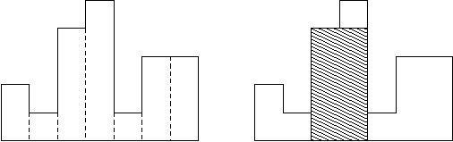
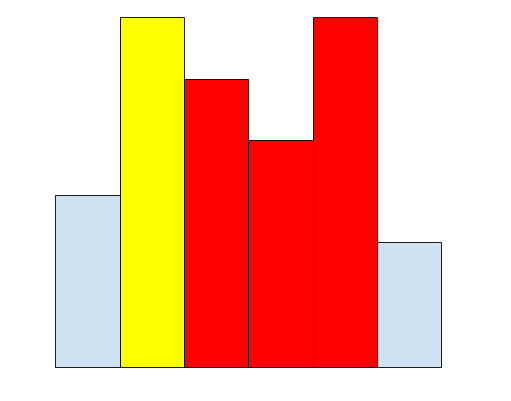
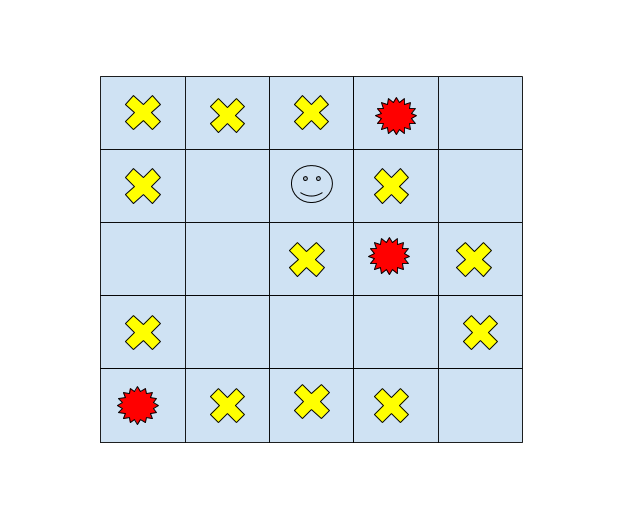
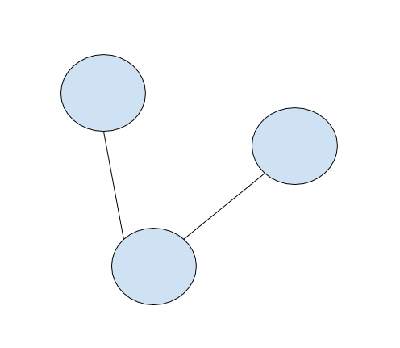

#include <stack>
#include <stdio.h>
using namespace std;
int main(){
stack<int> s;
s.push( 514 ); s.push( 514514 );
printf( "%d\n" , (int)s.size() ); // 2
printf( "%d\n" , s.top() ); // 514514
s.pop();
printf( "%d\n" , s.top() ); // 514
s.pop();
printf( "%s\n" , s.empty() ? "empty" : "not empty" );
// empty
}
寬 $N$ 的直方圖，第 $i$ 單位寬的部分高 $h_i$，問面積最大的矩形？
最佳矩形高度爲 $\min\{ h_L, h_{L+1}, \ldots, h_R \}$
往外擴到底！
若存在 $j$ < $i$ 且 $h_j$ > $h_i$，則 $i$ 以後 $h_j$ 無法成爲區間極值
stack<int> S;
for( int i = 1 ; i <= n ; i ++ ){
while( S.size() && h[ S.top() ] >= h[ i ] ) S.pop();
L[ i ] = 1 + ( S.size() ? S.top() : 0 );
S.push( i );
}
while( S.size() ) S.pop();
for( int i = n ; i >= 1 ; i -- ){
while( S.size() && h[ S.top() ] >= h[ i ] ) S.pop();
R[ i ] = ( S.size() ? S.top() : n + 1 ) - 1;
S.push( i );
}
#include <queue>
#include <stdio.h>
using namespace std;
int main(){
queue<int> q;
q.push( 514 ); q.push( 514514 );
printf( "%d\n" , (int)q.size() ); // 2
printf( "%d\n" , q.front() ); // 514
q.pop();
printf( "%d\n" , q.front() ); // 514514
q.pop();
printf( "%s\n" , q.empty() ? "empty" : "not empty" );
// empty
}
$R \times C$的地圖上，有障礙物、人(恰一個)、起火點(若干個)，問人是否能在不受火災侵襲而逃出迷宮？
要 BFS 很多次，複雜度 $O(R\times C \times R \times C)$
複雜度 $O(R\times C )$
while( q.size() ){
PII tp = q.front(); q.pop();
int nr = tp.first;
int nc = tp.second;
for( int i = 0 ; i < 4 ; i ++ ){
int nxtr = nr + dr[ i ];
int nxtc = nc + dc[ i ];
if( !in( nxtr , nxtc ) )
ans = min( ans , dst[ nr ][ nc ] + 1 );
else if( m[ nxtr ][ nxtc ] != '#' &&
dst[ nr ][ nc ] + 1 < dst[ nxtr ][ nxtc ] ){
dst[ nxtr ][ nxtc ] = dst[ nr ][ nc ] + 1;
q.push( { nxtr , nxtc } );
}
}
}
#include <deque>
#include <stdio.h>
using namespace std;
int main(){
deque<int> dq;
dq.push_back( 514 ); // 514
dq.push_back( 514514 ); // 514 514514
dq.push_front( 514514514 ); // 514514514 514 514514
printf( "%d\n" , (int)dq.size() ); // 3
printf( "%d\n" , dq.front() ); // 514514514
printf( "%d\n" , dq.back() ); // 514514
dq.pop_front();
printf( "%d\n" , dq[ 1 ] ); // 514514
}
給長度 $N$ 的序列 $a$ 及正整數 $K$。求出所有 $b_i = max\{ a_{i-K+1}, a_{i-K+2}, \cdots, a_i \}$
當 i < j 且 $a_i$ < $a_j$，則 $a_i$ 就再也不可能是答案
同時維護長度！
deque<int> dq;
for( int i = 1 ; i <= n ; i ++ ){
while( dq.size() && dq.front()<=i-k ) dq.pop_front();
while( dq.size() && a[dq.back()]<=a[i] ) dq.pop_back();
dq.push_back( i );
b[ i ] = a[ dq.front() ];
}
#include <queue>
#include <stdio.h>
using namespace std;
typedef priority_queue<int> Heap;
int main(){
Heap h;
h.push( 5 ); h.push( 1 ); h.push( 4 );
printf( "%d\n" , (int)h.size() ); // 3
printf( "%d\n" , h.top() ); // 5
h.pop();
printf( "%d\n" , h.top() ); // 4
h.push( 2 );
printf( "%d\n" , h.top() ); // 4
h.pop();
printf( "%d\n" , h.top() ); // 2
}
struct cmp{
bool operator()( int a , int b ){
return a % 3 < b % 3;
}
};
int main(){
priority_queue<int, vector<int>, cmp> h;
h.push( 4 );
printf( "%d\n" , h.top() ); // 4, 4 % 3 == 1
h.push( 51 );
printf( "%d\n" , h.top() ); // 4, 51 % 3 == 0
h.push( 104 );
printf( "%d\n" , h.top() ); // 104, 104 % 3 == 2
}
vector<PII> e[ N ];
priority_queue<PII,vector<PII>,greater<PII> > heap;
void Dijkstra( int source ){
heap.push( { 0 , source } );
while( heap.size() ){
PII tp = heap.top(); heap.pop();
int tdst = tp.first , tnode = tp.second;
if( vst[ tnode ] ) continue;
dst[ tnode ] = tdst;
vst[ tnode ] = true;
for( size_t i = 0 ; i < e[ tnode ].size() ; i ++ ){
int nxt = e[ tnode ][ i ].first;
int nxtdst = e[ tnode ][ i ].second + dst[ tnode ];
if( vst[ nxt ] ) continue;
heap.push( { nxtdst , nxt } );
}
}
}
#include <bits/extc++.h>
#include <stdio.h>
using namespace __gnu_pbds;
typedef priority_queue<int> heap;
int main(){
heap h1 , h2;
h1.push( 1 ); h1.push( 3 );
h2.push( 2 ); h2.push( 4 );
h1.join( h2 );
printf( "%d\n" , (int)h1.size() ); // 4
printf( "%d\n" , (int)h2.size() ); // 0
printf( "%d\n" , h1.top() ); // 4
h1.pop();
}
struct DisjointSet{
int p[ N ];
void Init( int n ){
for( int i = 1 ; i <= n ; i ++ ) p[ i ] = i;
}
int Find( int x ){
return x == p[ x ] ? x : Find( p[ x ] );
}
void Union( int x , int y ){
p[ Find( x ) ] = Find( y );
}
};
int Find( int x ){
return x == p[ x ] ? x : p[ x ] = Find( p[ x ] );
}
int p[ N ] , sz[ N ];
void Init( int n ){
for( int i = 1 ; i <= n ; i ++ )
p[ i ] = i, sz[ i ] = 1;
}
void Union( int x , int y ){
x = Find( x ); y = Find( y );
if( x == y ) return;
p[ x ] = y;
sz[ y ] += sz[ x ];
}
無向圖 $G$，$N$ 個點、$M$ 條邊，破壞 $Q$ 條邊，問每破壞一條邊後連通塊數？
破壞 $\rightarrow$ 建造
三類動物，$A$ 吃 $B$、$B$ 吃 $C$、$C$ 吃 $A$。給 $N$ 個動物，$K$ 筆資訊包含：
問有多少條資訊錯誤？
if( type == 1 ){
if( djs.Find( trans( x , 0 ) ) == djs.Find( trans( y , 1 ) ) ||
djs.Find( trans( x , 0 ) ) == djs.Find( trans( y , 2 ) ) ){
fake ++; continue;
}
for( int i = 0 ; i < 3 ; i ++ )
djs.Union( trans( x , i ) , trans( y , i ) );
}else{
if( djs.Find( trans( x , 0 ) ) == djs.Find( trans( y , 0 ) ) ||
djs.Find( trans( x , 0 ) ) == djs.Find( trans( y , 2 ) ) ){
fake ++; continue;
}
for( int i = 0 ; i < 3 ; i ++ )
djs.Union( trans( x , i ) , trans( y , ( i + 1 ) % 3 ) );
}
給你 $N$ 個點，$Q$ 筆操作：加邊或將最近 $k$ 條邊拔除，每筆操作完輸出連通塊個數
Find, Union都是一些assign操作!
vector< pair<int*,int> > h; vector<int> sp;
void assign( int *k, int v ){ h.push_back( {k, *k} ); *k = v; }
void save(){ sp.push_back(h.size()); }
void undo(){
int last=sp.back(); sp.pop_back();
while( h.size()!=last ){
auto x=h.back(); h.pop_back();
*x.first = x.second;
}
}
void Union( int x , int y ){
x = Find( x ); y = Find( y );
if( x == y ) return;
assign( &sz[ x ] , sz[ x ] + sz[ y ] );
assign( &p[ y ] , x );
}
給你長度 $N$ 的序列 $v$，$Q$ 筆操作：
struct Node{
int val;
Node *lc , *rc;
Node(){ val = 0; lc = rc = NULL; }
void pull(){
val = lc->val + rc->val;
}
};
Node* build( int L , int R ){
Node *node = new Node();
if( L == R ){
node->val = v[ L ];
return node;
}
int mid = ( L + R ) >> 1;
node->lc = build( L , mid );
node->rc = build( mid + 1 , R );
node->pull();
return node;
}
void modify( Node* node , int L , int R , int i , int d ){
if( L == R ){
assert( L == i );
node->val += d;
return;
}
int mid = ( L + R ) >> 1;
if( i <= mid ) modify( node->lc , L , mid , i , d );
else modify( node->rc , mid + 1 , R , i , d );
node->pull();
}
int query( Node* node , int L , int R , int ql , int qr ){
if( ql > R || qr < L ) return 0;
if( ql <= L && R <= qr ) return node->val;
int mid = ( L + R ) >> 1;
return query( node->lc , L , mid , ql , qr ) +
query( node->rc , mid + 1 , R , ql , qr );
}
給你長度 $N$ 的序列 $v$，$Q$ 筆操作：
void push( Node* node , int L , int R ){
if( !node->tag ) return;
if( L != R ){ // check leaf
int mid = ( L + R ) >> 1;
node->lc->tag += node->tag;
node->rc->tag += node->tag;
node->lc->val += node->tag * ( mid - L + 1 );
node->rc->val += node->tag * ( R - mid );
}
node->tag = 0;
}
$N \times N$($N \le 10^9$) 矩陣初始值爲零，$Q$ 筆操作:
要往下走時先確認有沒有該節點(想想 Trie!)
pull 時確認是否有該節點
int Val2( Node2* node ){ return node ? node->val : 0; }
void pull2( Node2* node ){
node->val = Val2( node->lc ) + Val2( node->rc );
}
給長度 $N 的序列 $v$，$Q$ 筆操作:
共同指向共用的節點
修改時新增自己用到的節點
詢問完全一樣！
struct Treap{
Treap *l , *r;
int pri , key , val;
Treap( int _val , int _key ) :
val( _val ) , key( _key ), l( 0 ), r( 0 ), pri( rand() ) {}
};
Treap* merge( Treap* a , Treap* b ){
if( !a || !b ) return a ? a : b;
if( a->pri > b->pri ){
a->r = merge( a->r , b );
return a;
}else{
b->l = merge( a , b->l );
return b;
}
}
void split( Treap* t , int k , Treap *&a , Treap *&b ){
if( !t ) a = b = NULL;
else if( t->key <= k ){
a = t;
split( t->r , k , a->r , b );
}else{
b = t;
split( t->l , k , a , b->l );
}
}
Treap* insert( Treap* t , int k ){
Treap *tl , *tr;
split( t , k , tl , tr );
return merge( tl , merge( new Treap( k ) , tr ) );
}
Treap* remove( Treap* t , int k ){
Treap *tl , *tr;
split( t , k - 1 , tl , t );
split( t , k , t , tr );
return merge( tl , tr );
}